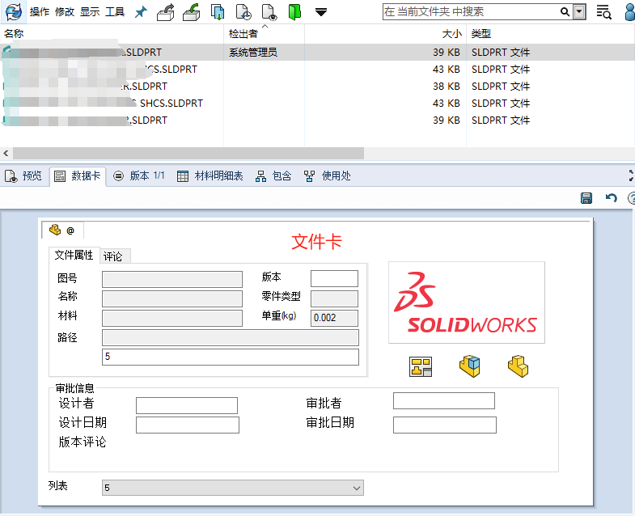

SOLIDWORKS-PDM卡
类型
模板卡：创建安模板文件夹时弹窗的卡片，可以用于输入模板信息使用；

搜索卡：

条目卡：

文件夹卡：

文件卡：
新建卡
新建卡
添加控件

设置变量

保存卡

其他技巧
控件属性说明

默认值：选择以下选项之一，以在生成新文件或新条目时自动在编辑框中输入默认值。 请参见 指派默认值。

默认盖写：在用户复制或添加文件或条目时，使用默认值盖写现有变量值。
配置：指定“默认值”写入配置
输入公式：指定输入公式，以在编辑框控件中填入根据链接其它控件的变量值而构建的字符串。
控制逻辑
控制逻辑里可以设置【显示】和【隐藏】操作，，通过判断逻辑